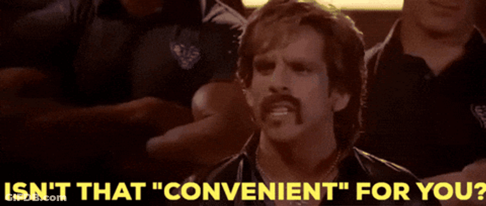
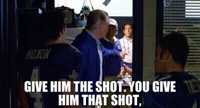
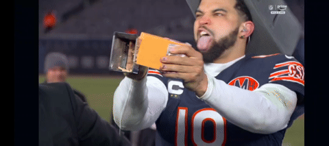

Published every Tuesday because Monday you're all still crying
Real records now. Sorted by points for within each record group.
| Rank | Team | Record | PF | Draft Grade |
|---|---|---|---|---|
| 1 | Covfefe is for Closers | 1-0 | 318.7 | A+ |
| 2 | MaHOMELANDER | 1-0 | 282.5 | B+ |
| 3 | Nabers ate my Zombies | 1-0 | 259.1 | D |
| 4 | Catchy Football Name | 1-0 | 227.7 | A |
| 5 | Texas Determined Domination | 1-0 | 203.0 | A- |
| 6 | Hurt Me Moore | 0-1 | 305.5 | B |
| 7 | Donuts All Day 24/7 | 0-1 | 219.8 | C+ |
| 8 | Waddle On Deez Nuts | 0-1 | 207.6 | C |
| 9 | Sutton My Face | 0-1 | 197.3 | B- |
| 10 | Kenz VishusLicks | 0-1 | 187.2 | C- |
Hurt Me Moore put up the second-highest score in the entire league and still lost. That's not a standings row, that's a cautionary tale.
The projections meant nothing. Here's what actually happened.
Projected: 236.6 – 253.9
Let's be honest about what happened here: David burned his one-time-a-year lineup optimizer to win this game, which is the fantasy equivalent of calling in a favor to pass a test you didn't study for. Even with the assist it was close — Tyler Shough randomly dropped 54.9 points at OP and Christian Watson turned into a WR1 out of nowhere for 41.2, and Covfefe still only won by 13. Meanwhile Jalen Hurts (42.6) and Bijan Robinson (43.55) both balled out for Hurt Me Moore and it wasn't enough, because Deebo Samuel (22.0) and Pat Freiermuth (18.35) sat on his bench doing absolutely nothing for him while Romeo Doubs started and returned 0.75. Small mercy: Hurt Me Moore walks away with $100 FAAB for the trouble. Cold comfort when the guy across from you had to cheat to beat you.

Projected: 225.2 – 226.3
Josh Allen went nuclear for Alby — 59.2 points, the single best individual performance in the entire league this week — and Donuts still lost. That's not bad luck, that's a supporting cast problem: George Pickens (8.3), James Cook III (16.65), and Rashid Shaheed (2.15) all no-showed, and Alby made it worse by starting the Cowboys D/ST (13.0) over the 49ers D/ST (19.0) sitting right there on his own bench. McCarty, for his part, won this one almost by accident — Kenny Gainwell face-planted for 4.8, Drake London and Michael Pittman both busted, and this team squeaks out the win anyway because the Steelers defense more than doubled its projection (37.0!) and Kyle Monangai popped off from nowhere. Neither of these rosters deserved to win. One of them had to.
Projected: 231.4 – 247.8
Sutton My Face was favored by 16 points on paper and still found a way to blow it, and the culprit has a name: Sam Darnold posted a 0.7. Zero point seven. To add insult to injury, Courtland Sutton — the actual namesake of this entire team — contributed a whopping 4.35 points to his own tribute roster. Derrick Henry (46.55) and C.J. Stroud (35.8) tried to drag this thing to the finish line and it still came up 5.7 points short. Kolby's win here is even funnier once you check his bench: he started Kyle Pitts Sr. at flex, who returned a season-shattering 0.25 points, while Isaiah Likely (32.8) and Dalton Kincaid (22.5) sat there doing nothing for him. Start either of those tight ends instead of Pitts and this isn't a nail-biter, it's a 30-point blowout. He won anyway. Book smart, lineup dumb, still 1-0.

Projected: 249.8 – 232.0
Kevin's Mahomes-Purdy stack finally justified the team name — Mahomes threw for 36.75, Brock Purdy added 45.55 out of the OP slot, and this thing was over by halftime. Ken's side of this is where it gets ugly: Matthew Stafford, his big round-3 reach from the draft, put up 12.15 against San Francisco, and Kyler Murray at OP barely moved the needle with 0.65 — yes, zero point six five — while Jaguars D/ST (27.5) was the only thing on this roster that showed up to play. A 95-point margin in Week 1 is the kind of result that makes you wonder if Ken should just skip ahead to next year's mock draft now.
Projected: 232.7 – 231.8
A near-dead-even projection, and JJ ran away with it anyway — Caleb Williams (60.15!) and Jahmyr Gibbs (50.6) combined for over 110 points by themselves, and Malik Nabers finally being on this roster for real paid off with a quiet 16.65. Lucas got a genuinely elite game out of Lamar Jackson (46.5) and still lost by 51 points, because everything else on this roster no-showed — Jaylen Waddle scraped together 1.95 points, Rico Dowdle managed 7.35, and Puka Nacua, his actual 1.1 overall pick, put up a pedestrian 15.65. When your QB outscores your WR1 by 30 points, that's not a bad week, that's a roster construction problem.

Top Week 1 projections available right now — refresh before waivers process
| Player | Pos | Team | Opp | Proj |
|---|---|---|---|---|
| Baker Mayfield | QB | TB | @CIN | 34.5 |
| Jordan Love | QB | GB | @MIN | 32.8 |
| Aaron Rodgers | QB | PIT | ATL | 32.6 |
| Kirk Cousins | QB | LV | MIA | 32.6 |
| Bryce Young | QB | CAR | CHI | 32.4 |
| Geno Smith | QB | NYJ | @TEN | 31.8 |
| Daniel Jones | QB | IND | BAL | 31.8 |
| Devaughn Vele | WR | NO | @DET | 11.9 |
| Tre Tucker | WR | LV | MIA | 11.7 |
| Jalen Coker | WR | CAR | CHI | 11.6 |
| Chris Brooks | RB | GB | @MIN | 11.2 |
| Kayshon Boutte | WR | HOU | BUF | 11.0 |
| Denzel Boston | WR | CLE | @JAX | 10.6 |
| Jerry Jeudy | WR | CLE | @JAX | 10.5 |